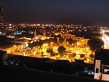
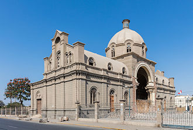
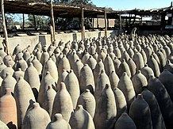

Aún bajo órdenes españolas, la ciudad de Ica fue fundada por Jerónimo Luis de Cabrera el 17 de junio de 1563, con el nombre de Villa de Valverde del Valle de Ica. Luego de constantes sismos que destruían la Villa, se tenían que cambiar de lugar y finalmente en 1633, se le reconoció como ciudad y se estableció en el lugar que actualmente ocupa. Se denominaría San Jerónimo de Ica en honor a su fundador.
En 1568 arriba al convento de san Francisco de Lima , una donación de efigies religiosas, cuyas cajas habían sido arrojadas al mar durante una fuerte tormenta y que curiosamente habían permanecido alrededor de la embarcación, pudieron ser salvadas. Pasados dos años y teniendo noticias de estos acontecimientos, el padre fray Francisco de Madrigal viajó desde Ica a Lima y recibió algunas de las cajas de dicha donación, a pesar de que estaban deterioradas, siendo trasladadas por mar de El Callao a Pisco.

Templo del Señor de Luren después del terremoto del 2007.
El arriero que trasportaba las cajas hasta la Villa de Valverde, se dio con la sorpresa de que una de las mulas había desaparecido mientras él dormía. Los vecinos del bosque de Rurin Ica (Ica Baja) encontraron a la mula y pretendieron llevarla a la ciudad. Para su sorpresa, fue imposible que la hicieran moverse del lugar, por lo que convocaron a las autoridades franciscanas para abrir las cajas. En una de ellas encontraron al Cristo Crucificado e interpretaron que la imagen quería quedarse en ese lugar.

Por deformación del vocablo rurin, se derivó el nombre actual de Señor de Luren, patrono de Ica que inspira tanta devoción entre los iqueños. La tradición también menciona las veces que la imagen ha sobrevivido milagrosamente a los intensos terremotos que han asolado la ciudad y la región en los últimos tres siglos y medio, lo mismo que en un incendio que originó el color oscuro de la imagen.
Hacia 1595 se inició la trata de esclavos africanos por los españoles que, para el sur del Perú, se comercializaban en Chincha, provincia en donde actualmente se encuentra más concentrada la cultura afroperuana. Esta población fue ocupada principalmente en la agricultura, tanto en los viñedos como posteriormente en los algodonales.
En 1786, debido a que el Virreinato del Perú quedó dividido en intendencias , se suprimió el corregimineto de Ica , pasando a formar parte de la intendencia de Lima . En aquella época el personaje iqueño más notable era el Marqués de Torre Hermosa.
En la gesta libertadora, la ciudad de Ica proclamó la independencia meses antes de la llegada del libertador San Martín en septiembre de 1820, quien desembarca en la Bahía de Paracas y establece su Cuartel General en Pisco. En julio de 1821 parte hacia Lima. Más adelante, el escritor Abraham Valdelomar se inspiró en este hecho para inventar un cuento en el que San Martín se imagina la bandera peruana observando unas parihuanas con alas rojas. Este cuento se llama "El sueño de San Martín". Por supuesto, una ficción creada alrededor de la independencia del Perú en las costas de Pisco.
